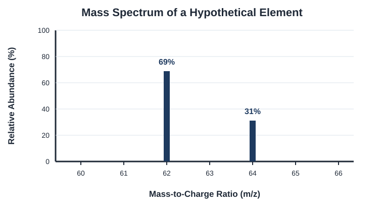

Atomic Structure and Properties
Learn the fundamental structure of atoms, elements, and isotopes and understand how atomic properties influence chemical behavior.
Topics
Moles and Molar Mass
Learn how chemists use the mole to connect particles, mass, and chemical quantities.
Mass Spectrometry
Understand how mass spectrometry can be used to analyze isotopes and determine atomic masses.
Atomic Structure
Explore protons, neutrons, electrons, isotopes, and the structure of the atom.
Moles and Molar Mass
The mole is a fundamental unit used in chemistry to describe an amount of substance. It connects the microscopic world of particles to measurable quantities such as mass.
What Is a Mole?
A mole is a counting unit, much like a dozen. While one dozen represents 12 objects, one mole represents 6.022 × 1023 particles.
Representative particles may be atoms, molecules, ions, or formula units, depending on the substance.
Converting Between Moles and Particles
To convert from moles to particles, multiply by Avogadro’s number. To convert from particles to moles, divide by Avogadro’s number.
Example: Moles to Particles
How many molecules are present in 2.00 moles of H2O?
What Is Molar Mass?
Molar mass is the mass of one mole of a substance. It is measured in grams per mole, or g/mol. The molar mass of an element is numerically equal to its atomic mass on the periodic table.
Example: Finding Molar Mass
Calculate the molar mass of H2O.
Converting Between Grams and Moles
Molar mass is used as a conversion factor between grams and moles. To convert grams to moles, divide by the molar mass. To convert moles to grams, multiply by the molar mass.
Example: Grams to Moles
How many moles are present in 36.04 grams of H2O?
The molar mass of H2O is 18.02 g/mol.
Practice Questions
Try each problem before opening the solution.
Question 1
How many molecules are present in 0.500 mol of CO2?
Show solution
Multiply the number of moles by Avogadro’s number:
Question 2
How many moles are present in 44.01 g of CO2?
Show solution
The molar mass of CO2 is 44.01 g/mol.
Question 3
What mass of Na contains 3.011 × 1023 atoms?
Show solution
First, convert atoms to moles:
Next, multiply by the molar mass of sodium:
Watch: Moles and Molar Mass
Watch a worked example explaining how to convert between moles, particles, and mass.
Mass Spectrometry
Mass spectrometry is an experimental technique used to identify the isotopes of an element and measure their relative abundances. (Remember an isotope is the same element with a different number of neutrons in the nucleus) The resulting data can be displayed in a mass spectrum.
Reading a Mass Spectrum
Each vertical peak in a mass spectrum represents an isotope detected in the sample. The position and height of each peak provide different information about that isotope.
- The horizontal axis shows mass of the isotope in grams (g)
- The vertical axis shows the relative abundance of each isotope.
- A taller peak represents an isotope that is more abundant in the sample.

Calculating Average Atomic Mass
The atomic mass shown on the periodic table is a weighted average of an element’s naturally occurring isotopes. This means that an isotope with a greater abundance has a greater effect on the element’s average atomic mass.
Steps for Finding Average Atomic Mass
- Convert each percentage abundance into a decimal by dividing it by 100.
- Multiply the mass of each isotope by its decimal abundance.
- Add the results for all the isotopes.
Example: Finding Average Atomic Mass
A hypothetical element has two naturally occurring isotopes:
- An isotope with a mass of 62 amu and an abundance of 69.0%
- An isotope with a mass of 64 amu and an abundance of 31.0%
First, convert the percentage abundances into decimals:
31.0% ÷ 100 = 0.310
Next, multiply each isotopic mass by its decimal abundance:
64 amu × 0.310 = 19.84 amu
Finally, add the two contributions:
The average atomic mass is 62.62 amu. This value is closer to 62 amu than to 64 amu because the isotope with a mass of 62 amu is more abundant.
Mass Spectrometry Practice
Use the mass spectrum and average atomic mass concepts from this lesson to answer the following questions.
Question 1: Interpreting a Spectrum
A mass spectrum contains a peak at an isotopic mass of 48 amu with a relative abundance of 74% and another peak at 50 amu with a relative abundance of 26%.
Which isotope is more abundant, and what evidence from the spectrum supports your answer?
Show solution
The isotope with a mass of 48 amu is more abundant.
Its peak represents 74% of the sample, while the peak for the 50 amu isotope represents only 26%. Therefore, the peak at 48 amu would be taller.
Question 2: Calculating Average Atomic Mass
A hypothetical element has two naturally occurring isotopes:
- 70 amu with an abundance of 65.0%
- 72 amu with an abundance of 35.0%
Calculate the average atomic mass of the element.
Show solution
First, convert the percentages to decimals:
35.0% ÷ 100 = 0.350
Multiply each isotopic mass by its decimal abundance:
72 amu × 0.350 = 25.20 amu
Add the two contributions:
The element’s average atomic mass is 70.70 amu.
Question 3: Reasoning from an Average
A hypothetical element has two isotopes with masses of 24 amu and 26 amu. Its average atomic mass is 25.6 amu.
Without calculating exact abundances, which isotope must be more abundant? Explain your reasoning.
Show solution
The isotope with a mass of 26 amu must be more abundant.
The average atomic mass of 25.6 amu is much closer to 26 amu than to 24 amu. A weighted average is pulled toward the isotope with the greater abundance.